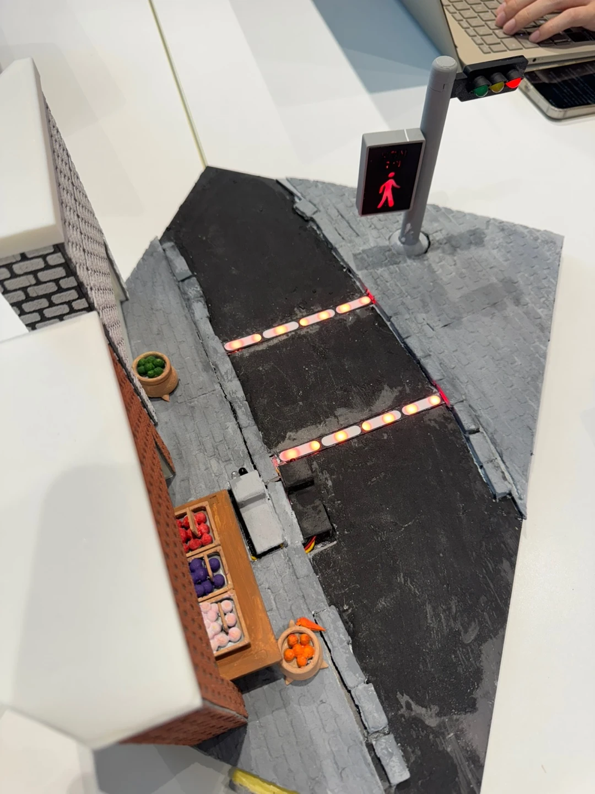
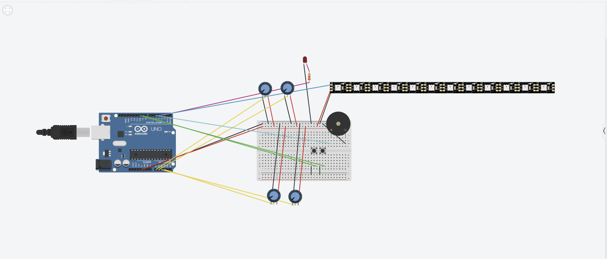

프로젝트 개요
천안시 청소년 도시재생 챌린지(U-CAST) 5팀이 만든 하드웨어형 시제품 「멈춰 !」입니다. 구간마다 시작 · 끝 IR 센서와 네오픽셀 스트립을 하나로 묶었습니다. 보행자가 도로 쪽으로 들어서면 그 채널의 LED 스트립이 빨간색으로 점멸하고 공용 운전자 경고 LED가 점멸하며 수동 부저가 사이렌을 내고 같은 채널의 끝 IR이 보행자의 통과를 확인할 때까지 시스템 작동이 유지됩니다. 무단횡단을 물리적으로 막지는 않지만 이미 도로에 진입한 보행자를 운전자 · 보행자에게 더 빨리 알리는 2차 사고 예방 장치입니다.
수상
5팀의 「멈춰 !」는 2026 천안시 청소년 도시재생 챌린지(U-CAST)에서 지역 사회의 문제를 가장 잘 다룬 작품에 주는 로컬임팩트상을 수상했습니다.
- 언론 보도: press.mtime.co.kr
- 언론 보도: dstv.kr
시스템 설계
- 시작 IR + 네오픽셀 스트립 + 끝 IR을 한 채널로 묶어 서로 완전히 독립적으로 동작(전역 횡단 상태로 합치지 않음)
- 한 채널의 시작 IR은 그 채널의 스트립만 점멸시키고 같은 채널의 끝 IR만 그 채널을 종료(다른 채널은 계속 활성 유지 가능)
- 채널이 하나 이상 활성인 동안 공용 운전자 경고 LED와 부저 사이렌이 유지
- 빨강 · 초록 버튼으로 모든 채널을 한 번에 시작 · 종료(시연용)
- delay() 대신 millis()를 사용해 채널별 센서 판정 · 점멸 · 사이렌을 동시에 유지
시제품 사진


직접 체험 데모
나의 역할
5팀 멘토
- 문제 정의, 최종 명칭(「멈춰 !」)과 MVP 범위 구체화
- 병합된 양방향 상태에서 채널별 독립 상태 머신으로의 재설계 지도
- 배선 검토 · 디버깅 · 안전한 설계 지원
- 조립 · 문제 해결 · 발표 시연 자료 준비 지원